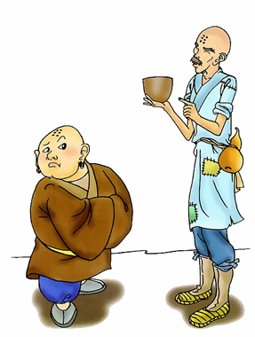

为学一首示子侄
彭端淑
天下事有难易乎？为之，则难者亦易矣；不为，则易者亦难矣。
人之为学有难易乎？学之，则难者亦易矣；不学，则易者亦难矣。
吾资之昏，不逮人也，吾材之庸，不逮人也；
旦旦而学之，久而不怠焉，迄乎成，而亦不知其昏与庸也。
吾资之聪，倍人也，吾材之敏，倍人也；屏弃而不用，其与昏与庸无以异也。
圣人之道，卒于鲁也传之。
然则昏庸聪敏之用，岂有常哉？
蜀之鄙有二僧：其一贫，其一富。
贫者语于富者曰：吾欲之南海，何如？
富者曰：子何恃而往？
曰：吾一瓶一钵足矣。
富者曰：吾数年来欲买舟而下，犹未能也。子何恃而往！
越明年，贫者自南海还，以告富者，富者有惭色。
西蜀之去南海，不知几千里也，僧富者不能至而贫者至焉。
人之立志，顾不如蜀鄙之僧哉?是故聪与敏，可恃而不可恃也；自恃其聪与敏而不学者，自败者也。
昏与庸，可限而不可限也；不自限其昏与庸，而力学不倦者，自力者也。